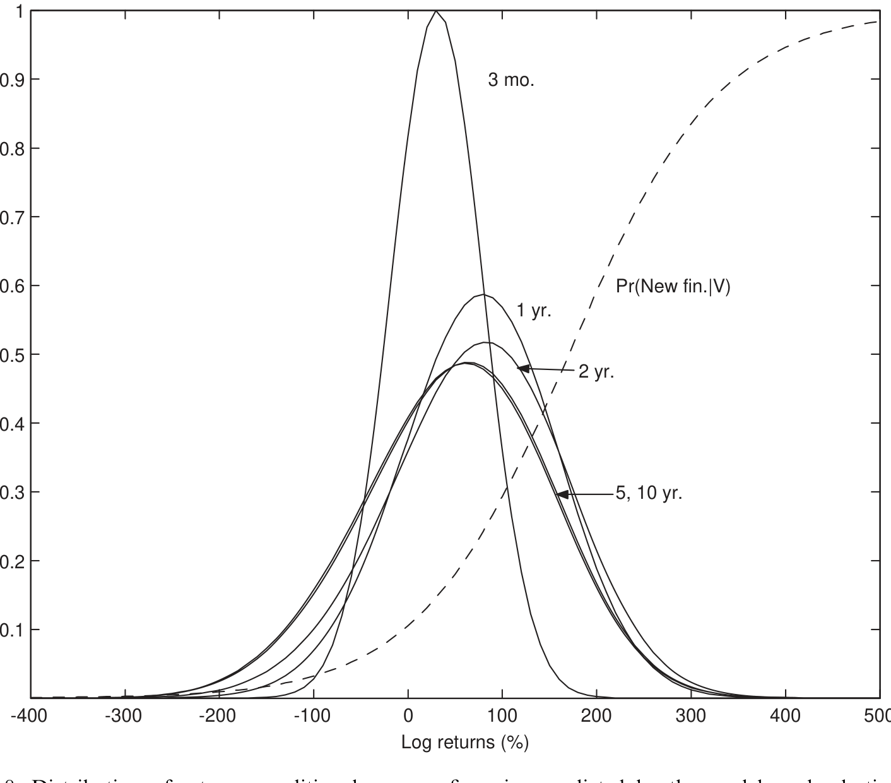
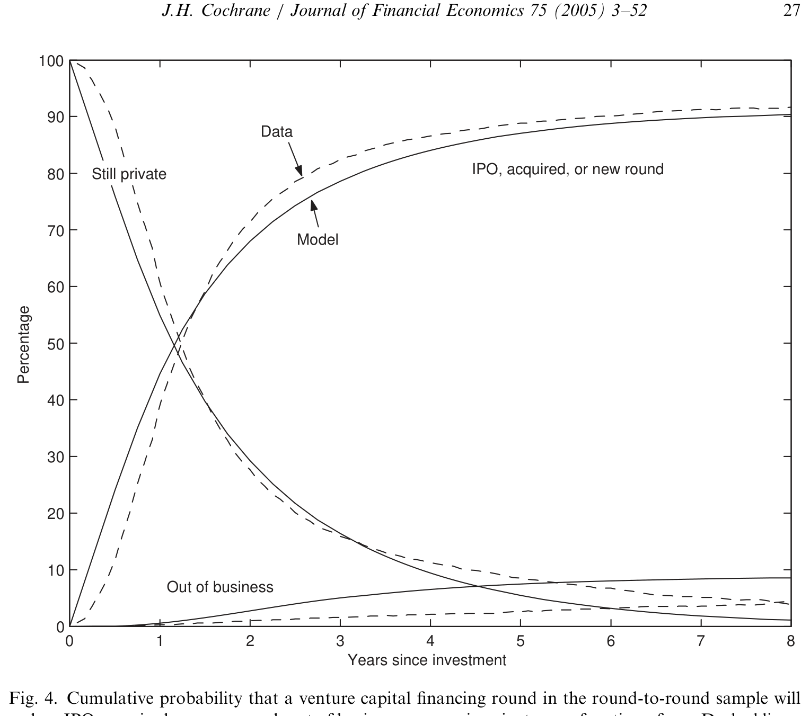
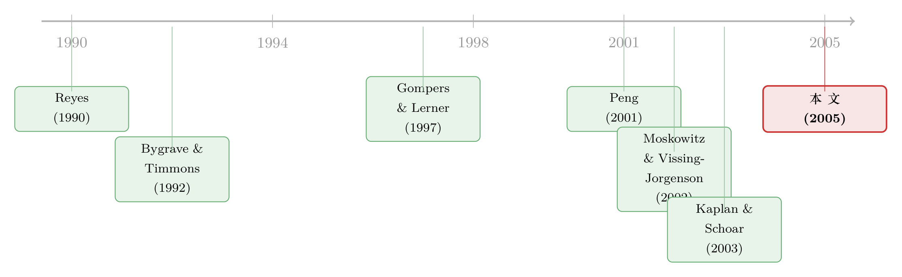

看上去赚翻了的风险投资，其实只是一把彩票
本文读的是 Cochrane (2005, Journal of Financial Economics)：风险投资（VC）项目「看上去」的平均收益高得吓人——投资到 IPO 或被收购的算术平均收益 698%、对数平均收益 108%。但这几乎全是选择偏差的幻觉。作者用一个修正了选择偏差的最大似然估计，把对数平均收益从 108% 一路压到 15%，把算术平均收益从 698% 压到 59%。剩下那点仍然偏高的算术收益，并不来自「高均值」，而来自「高波动」——VC 本质上像一张彩票或一份期权：极小概率的巨大赔付。
1 一个看上去稳赚不赔的生意
先讲一个让人血压升高的数字。
如果你统计 1987–2000 年间美国所有「最终拿到下一轮融资、上市、或被收购」的风险投资项目，从投进去那天算到退出那天，平均算术收益（arithmetic return）是 698%，标准差高达 3,282%。哪怕换成更温和的对数收益（log return）来看，平均也有 108%、标准差 135%。再往下拧一道——做一个最普通的 CAPM 回归，你会得到一个算术 alpha 462%；就算在对数空间里做市场模型，截距 alpha 仍然有 92%。
462% 的 alpha 是什么概念？做异象（anomaly）研究的人，一辈子都在为每月 1%–2% 的超额收益争得面红耳赤。这里一年 462%，相当于直接把整个资产定价的教科书掀翻在地。
于是一个自然的问题是：风险投资真有这么神吗？ 如果是真的，那这是金融学有史以来最大的免费午餐；如果不是真的，那问题出在哪？
这篇 2005 年的论文——作者是芝加哥大学的 John Cochrane（对，就是后来写下那篇著名的 AFA 主席演讲、把「贴现率」拎成资产定价中心议题的同一个人，关于那篇可参见《贴现率：资产定价的中心议题》）——给出的答案是：这几乎全是假的，是一种叫「选择偏差」的统计幻觉。
2 我们只在「赢家」身上量收益
问题的根子，藏在一句听起来人畜无害的话里：我们只有在公司上市、被收购、或拿到新一轮融资时，才能观测到一个估值，从而算出一个收益。
可一家公司什么时候才会迎来这些「好事」？答案是：当它过得好的时候。 价值涨上去的项目更容易拿到下一轮钱，尤其更容易去 IPO；价值跌下去、苟延残喘的项目，要么悄无声息地留在私募状态、要么直接倒闭——而我们恰恰看不到它们的收益。
这就是 选择偏差 (selection bias)：被我们「看见」的那些收益，系统性地是从收益分布的上半截里挑出来的。于是观测到的平均收益向上偏，观测到的波动率反而向下偏。
Cochrane 用一个极端的思想实验把这件事讲透了。假设每个项目都恰好在价值涨到 10 倍时上市。那么你观测到的每一笔收益都精确等于 1,000%，标准差为零——无论这些项目底层真实的收益分布长什么样。一个「均值 1,000%、方差为零」的估计，显然是对投资者真实面对的风险收益的荒谬扭曲。
注意这里的反直觉之处：被选出来的样本，收益分布不随时间变宽。正常情况下，收益会随持有期复利、分布往右移、越摊越开；但当你每期都把「赢家」从分布顶端拎走，剩下的分布就被反复「削平」，总收益分布在不同持有期上惊人地稳定。这个「稳定」本身，就是选择性样本的指纹。
但真正关键的一步在于：这个思想实验里，我们其实还能把底层的真实分布反推出来。 1,000% 这个观测值告诉我们的不是收益分布，而是选择函数（上市的门槛在哪里）；而「每年有多大比例的项目去上市」这件事，才告诉我们真实的收益分布。如果我们看到每年有 10% 的项目上市，那就意味着真实收益分布的上 10% 分位点，正好落在 1,000% 这个收益上。
均值随持有期线性增长、标准差随持有期的平方根增长——所以「不同年份里有多少比例的项目上市」这条随时间变化的曲线，能够分别识别出底层收益分布的均值和标准差。
这就是整篇论文的灵魂：用「退出的时间模式」去识别收益分布，而不是用「观测到的收益」本身。
3 把一块钱的命运写成一棵概率树
要把上面这个直觉落地成估计，Cochrane 写下了一个结构化的概率模型，并用最大似然（maximum likelihood）去拟合。下面一步步拆。
3.1 收益过程：一个对数版的 CAPM
第一块积木，是单个项目价值的演化。作者追踪「投进去的一块钱」（初始 V_0 = 1），假设它在每个区间（论文取三个月）按对数正态分布增长：
$$\ln\frac{V_{t+1}}{V_t} = \gamma + \ln R^f_t + \delta\left(\ln R^m_{t+1} - \ln R^f_t\right) + \varepsilon_{t+1},\qquad \varepsilon_{t+1}\sim N(0,\sigma^2)$$
这其实就是一个写在对数收益上的 CAPM：项目的对数超额收益，等于一个截距 γ、加上 δ 倍的市场对数超额收益、再加上一个独立同分布的特质冲击 ε。为什么不用算术收益？因为 VC 收益极度偏斜、极度高波动，一个「算术收益服从正态」的模型在这里会荒谬到离谱——而对数正态恰好能容纳那条又长又厚的右尾。
我们把最核心的这个方程拆开看：
3.2 选择函数：价值越高，越容易「出场」
第二块积木，是「拿到新一轮融资 / 上市 / 被收购」的概率。现实里它不是一个跳变的台阶函数，而是随价值平滑上升的。作者用一个 logistic 函数来刻画：
$$\Pr(\text{new round at } t \mid V_t) = \frac{1}{1 + e^{-a\left(\ln(V_t) - b\right)}}$$
b 是「出场门槛」的位置（价值涨到多少才大概率出场），a 控制这条 S 曲线的陡峭程度。注意作者从 V_0 = 1 出发，意味着是否上市取决于「累计收益」而非「绝对规模」：一笔 1 美元涨到 1,000 美元的投资很可能上市，而一笔 10,000 美元跌到 1,000 美元的投资不会。
3.3 把三种命运拼成似然函数
有了这两块积木，每一轮融资此后只有三种命运：(i) 拿到新一轮 / 上市 / 被收购（于是我们看到一个收益）；(ii) 倒闭；(iii) 到样本期末仍然私有。Cochrane 在一个对数价值的网格上，逐期把这三种命运的概率算出来：
- 新一轮的概率 = 该价值的概率密度 × 选择函数；这些项目「出场」，退出后续计算；
- 倒闭的概率：用一个随价值下降的线性函数刻画（价值越低越容易倒），下界设在一个参数
k上——因为对数正态过程永远碰不到零，必须人为设一个「跌破k就出局」的边界； - 仍然私有的，就是「剩下来」的那部分，带着各自的价值进入下一期，再用收益过程往前推一格。
观测到的收益分布，正是底层收益分布与上升的选择函数两者的乘积——所以它的均值上偏、波动率下偏。但只要我们同时盯住「观测收益的分布形状」和「随时间出场的比例」，就能把底层分布和选择函数一起识别出来。

Figure 8: Distribution of returns conditional on new financing predicted by the model, and selection
把所有数据点的对数概率加起来，就得到对数似然；在参数 {γ, δ, σ, k, a, b, p} 上数值搜索使其最大化即可（p 是后面要讲的测量误差参数）。作者还细致地处理了脏数据：日期缺失、收益缺失、倒闭日期被批量「清洗」过等六类情形，各自写了对应的概率项——这是把一个漂亮想法做成可信估计的苦功夫。
4 反转：108% 变成了 15%
现在见证奇迹的时刻。把选择偏差修正进去之后，那些吓人的数字纷纷塌缩：
| 指标 | 不修正（观测值） | 修正选择偏差后 |
|---|---|---|
| 对数平均收益 | 108% |
15% |
| 对数市场模型 alpha | +92% |
−7% |
| 算术平均收益 | 698% |
59% |
| 算术 alpha | 462% |
32% |
| 算术收益标准差 | 3,282% |
107% |
对数空间里的市场模型斜率（beta）是 1.7。换句话说，一旦把「我们只在赢家身上量收益」这件事老老实实地建模进去，风险投资瞬间从「天上掉馅饼」变回了「一只 beta 略高、波动很大的小盘成长股」。对数 alpha 甚至变成了微负的 −7%。
作者还发现，越往后的融资轮次越不那么「凶」：从第一轮到第四轮，平均收益、alpha、beta 都在稳步下降，而特质方差大致不变；后面的轮次也更容易上市。这非常符合直觉——越接近 IPO，不确定性越小。
4.1 那剩下的 32% alpha，是从哪来的？
但故事还没完。59% 的算术平均、32% 的算术 alpha——这仍然比任何异象都大得多。修正了选择偏差，怎么还剩这么多？
这里是全文最精妙的洞察。这些高企的算术收益，不来自「高的对数均值」，而来自「极高的特质波动」。 回忆对数正态的均值公式：
$$E[R] - 1 = e^{m + \frac{1}{2}\sigma^2} - 1$$
如果 σ = 1（即 100% 的波动率），那么哪怕对数均值 m = 0，光是那个 ½σ² 项就能贡献出 65% 的算术收益。
这正是 VC「像期权」的数学根源。一个均值不高、但方差极大的对数正态分布，会有一条又长又厚的右尾——绝大多数项目血本无归，极少数项目回报上千倍。这条厚尾把算术平均狠狠抬高，但它衡量的是「赌性」而非「价值创造」。VC 就是这样一张彩票：小概率的巨大赔付。
而那个核心识别——「为什么底层对数均值这么低、波动这么高」——靠的恰恰是退出的时间模式。数据里，IPO、被收购、倒闭这些「出场」事件随项目年龄大致呈几何衰减（缓慢地、每期以固定比例发生）。Cochrane 的论证是：如果底层的年对数收益均值很大（无论正负），那么所有项目都会很快地要么上市、要么倒闭——总收益分布的质量会迅速向左或向右移走，出场会来得又快又集中。而我们观测到的是缓慢的几何衰减，这就逼着底层分布必须有一个很小的均值和一个很大的标准差：小均值让分布不至于很快漂走，大标准差让两条尾巴能持续地、缓慢地制造出成功者和失败者。

Figure 5: shows that, despite the 108% mean log return, a substantial fraction of
这套识别逻辑的漂亮之处在于：核心结论几乎是「数据形状」直接逼出来的，而不是 MLE 黑箱里变出来的。 很难想象出场模式会不是我们看到的几何衰减；也很难想象单个 VC 项目的收益不是高度波动的——毕竟连可交易的小盘成长股都有相似量级的波动。作者因此对 α = 0 和 E(R) = 15% 这两个假设做了正式检验，都被压倒性地拒绝。
5 它会不会只是 1990 年代末的 IPO 泡沫？
聪明的读者一定会立刻警觉：这套数据横跨了互联网泡沫，会不会整个结论都是那几年 IPO 狂潮的产物？
Cochrane 把稳健性检验做得密不透风：
- 砍掉 1997 年之后的所有数据，结论定性不变；
- 把样本期末（2000 年 6 月）仍然活着的公司一律当作「已倒闭、价值归零」处理，结论定性不变；
- 换不同的参考收益（S&P 500、Nasdaq、最小的 Nasdaq 十分位、一篮子极小的 Nasdaq 公司），高企的、由波动驱动的算术 alpha 都还在；
- 两套完全不同的收益定义（「投资到 IPO/收购」与「一轮到下一轮」）给出一致的结果——而后者对 IPO 的权重低得多，这种一致性还顺带说明：当 IPO 把 VC 的流动性等特殊性剥离之后，并没有冒出一笔额外的「大收益」；
- 各行业的估计相当接近，不是互联网股票独有的现象；
- 引入测量误差过程（以概率
p把真实值替换为网格上均匀分布的乱数）来吸收那些「短期内拿到天文数字年化收益」的离群点；去掉测量误差，均值估计反而更大。
最后一记重拳：作者发现，同期一篮子极小的 Nasdaq 股票，也有相似的巨大算术平均、超过 100% 的标准差、以及高达 53% 的算术 alpha——而且这个 alpha 在统计上显著，既不能被传统的小盘组合解释，也不能被 Fama-French 三因子模型解释。
这就把结论推到了一个更深的层次：VC 的「反常」，也许根本不是 VC 特有的。 它和那些极小的、可交易的成长股，是「相似的现象，但不是同一个现象」（VC 在这些极小股票上的 beta 不为 1、alpha 不为 0）。无论这背后是某个缺失的因子、还是对流动性的补偿——我们在公开市场和私募市场上看到了同一种东西，这恰恰说明风险投资本身并没有什么特别。
6 文献脉络
要理解这篇论文的位置，得先看看在它之前，人们是怎么量 VC 风险收益的——以及为什么都不太靠谱。
最早一批研究，要么压根没法算风险，要么严重受困于选择与幸存偏差。Reyes (1990) 报告 VC 整体的 beta 在 1.0 到 3.8 之间，但完全没有修正选择或中间缺失数据。Bygrave 和 Timmons (1992) 算出 1974–1989 年 VC 基金的内部收益率（IRR）平均 13.5%，但这个口径根本无法做风险测算。Long (1999) 仅基于九笔成功的 VC 投资到 IPO 的收益，估出 24.68% 的年标准差——样本本身就是「赢家」。
接着，一个自然的进步方向是引入更聪明的统计手段。Peng (2001) 用同一套底层数据，以重复销售回归（repeat sales regression）填补未观测的估值、并对样本期末仍私有的公司做重新加权，估出 55% 的几何平均收益和一个高达 4.66 的 Nasdaq beta——但这远高于 Cochrane 对单个项目估出的 15%。Gompers 和 Lerner (1997) 则走了另一条路：盯住单一一家 VC 的投资、定期按市值重估，从而把失败也纳入样本，消掉了一大块选择偏差；他们估出 30.5% 的算术年均收益、8% 的 alpha，并发现按市值重估会把 beta 从 1.08 抬到 1.4——这本身就说明「用自报估值」会严重扭曲风险度量。

然后，一批研究开始直面「样本期末仍私有」这个最棘手的偏差源。Ljungqvist 和 Richardson (2003) 聚焦 1992 年前发起、几乎都已了结的投资，估出 19.8% 的 IRR，并把其中 5%–6% 解读为流动性溢价。Moskowitz 和 Vissing-Jorgenson (2002) 发现全部私募股权组合的风险收益接近上市股票，但他们用的是消费者金融调查里的自报估值，而 VC 在全部私募股权中占比还不到 1%。Kaplan 和 Schoar (2003) 发现 VC 基金的平均收益和 S&P 500 大致相当，且业绩出人意料地持续。Chen 等 (2002) 检视 148 只已清算的 VC 基金，得到 45% 的算术年均、13.4% 的对数年均和 115.6% 的标准差——这几个数字和 Cochrane 的结果颇为接近。
而本文（Cochrane, 2005）在这条脉络里的独特贡献是：第一次系统地、用最大似然把选择偏差（尤其是「样本期末仍私有」造成的偏差）建模进去，落到「单个项目」而非「基金」或「指数」的层面，并且完全不依赖任何插补的中间估值。 它把一个困扰 VC 文献多年的老问题——「为什么 VC 投资者要求 35%–50% 的高贴现率，事后平均收益却没那么高」（Smith and Smith, 2000 综述过这一谜题）——用一个干净的统计框架重新厘清了。
7 评论与延伸（Q&A + 研究方向）
(a) 几个可能的疑问
Q：选择偏差和我们常说的「幸存者偏差」是一回事吗？
是近亲，但更精细。幸存者偏差通常指「死掉的样本被整体丢弃」；这里的选择偏差是连续的、与价值挂钩的——出场概率是价值的平滑递增函数，所以被观测到的不只是「活着的」，而是「涨得好的」。本文的贡献正是把这个连续的选择函数（logistic）显式估出来，而不是简单地把死亡样本补一个零。
Q：核心识别到底靠什么？是观测到的收益吗？
恰恰相反，而且这是全文最反直觉的一点。驱动「低对数均值、高波动」这个核心结论的，是「退出随时间的几何衰减模式」，而不是观测到的收益本身。 观测收益的分布只负责识别「选择函数」（价值多高才会出场）。把这两条信息分开，是这个识别能成立的关键。
Q：那剩下的 32% 算术 alpha 是真 alpha 吗，还是又一个偏差？
作者认为它是真实的，但它衡量的不是「价值创造」，而是「波动」。算术 alpha 高，是因为对数正态的
½σ²项在σ≈1时巨大；这是 VC「像期权」的数学后果。更重要的是，同期极小的 Nasdaq 股票也有53%的、无法被三因子解释的算术 alpha——所以这更像是一个跨公私市场的共同谜题，而非 VC 独有。
Q：把样本期末还活着的公司全部当成「归零」，结论还成立，这合理吗？
这是一个极端保守的稳健性检验：把所有未了结的项目都当作最坏情况（彻底失败、价值为零）。如果在如此悲观的假设下结论都定性不变，那说明结论并非由那些「还没兑现的纸面赢家」撑起来的。这恰恰增强了可信度。
Q：这篇讲的是「项目」收益，那 LP 投到 VC 基金里能拿到这个收益吗？
不能，会更低。作者明确指出，VC 基金通常收
2%–3%的年管理费、外加 IPO 时20%–30%的利润分成，所以基金投资者的净收益低于项目收益；不过基金层面也享有跨项目分散的好处。本文刻意只测「项目」层面，是为了干净地识别底层的风险收益结构。
Q：为什么不用算术收益建模，非要用对数？
因为 VC 收益极度偏斜、极度高波动。一个假设「算术收益服从正态」的模型，会被那条上千倍回报的右尾撕碎；对数正态则天然能容纳这种偏斜，再通过
e^{m+½σ²}把对数世界的估计翻译回算术世界的 alpha 和 beta。
(b) 几个可能的研究问题与提案
1. 把这套选择偏差框架搬到公司债的违约/回收数据上
【经济故事】公司债的「已实现回收率」同样是一个被选择性观测的量——我们往往只在违约真正发生、进入清算或重组时才看到一个回收值，而那些「濒临违约又被救回」的发行人不进入样本。这会让回收率的均值和波动都被系统性地扭曲。
【可行性】中。Moody's/S&P 的违约与回收数据库、TRACE 成交数据都可得；难点在于为「是否进入违约观测」写出一个可信的、与企业价值挂钩的选择函数。识别上可借鉴本文「用退出时间模式识别底层分布」的思路。doable，但选择函数的设定需要很强的制度细节支撑。
2. 外资持有人的进出，会不会也制造一层选择偏差？
【经济故事】跨境股权/债券投资里，我们常只在「资金真正流入或流出」时观测到外资头寸，而这恰恰更可能发生在收益表现好（或坏）的时点。如果用观测到的外资收益去推断「外资到底赚不赚钱」，可能重蹈 VC 的覆辙。（关于外资长期效应的另一面，可参见《外资真是「蝗虫」吗？》。）
【可行性】中。需要 EPFR 或托管层面的高频持仓流量数据；识别上需把「观测到流量」的概率建模为收益的函数。难在数据频率与持仓估值的匹配。
3. 「退出时间模式」能否反过来给私募基金的存续期定价？
【经济故事】本文证明了「退出随年龄几何衰减」蕴含了底层收益分布的关键信息。那么反过来，不同基金的退出节奏差异（有的三年清盘、有的拖到第十年），是否本身就编码了底层项目的均值与波动差异，从而可以用来给基金的「久期风险」定价？
【可行性】中偏低。需要项目级的退出时点面板（Preqin/VentureXpert）；识别上要把基金固定效应和底层分布参数分开，自由度可能不够。是个有意思但偏难的方向。
4. 把 IPO「上市后长期弱势」重新理解成一道选择算术
【经济故事】IPO 之后的长期收益偏低，长期被解读为「市场对新股过度乐观」。但本文提醒我们：上市这个事件本身就是高度选择性的。如果把「哪些项目会上市」的选择函数显式建模，所谓的长期弱势里有多少是真异象、多少是观测偏差的镜像？（这条思路与《为什么「上市后跌跌不休」可能是一道算术题？》高度呼应。）
【可行性】高。CRSP/Compustat 上的 IPO 长期收益数据成熟，本文的 MLE 框架可以直接迁移。是最 doable 的一个方向。
5. 危机期间，VC/PE 的「不出场」本身是不是一个流动性信号？
【经济故事】在信用与流动性收紧的时点，IPO 窗口关闭、并购停摆，项目被迫「滞留私有」。这种被动滞留会进一步加剧选择偏差，也可能本身就承载了一个流动性溢价的时变成分。
【可行性】中。需要把退出概率的选择函数做成时变的（依赖宏观流动性状态），与本文的 i.i.d. 假设相比自由度更高；识别上需要足够长、跨越多个信用周期的项目级数据。
我的判断
这是一篇方法论上极其漂亮的论文。它最了不起的地方，不是把 108% 砍到 15% 这个结果，而是识别逻辑的优雅：把「观测收益」和「退出时间」这两条信息分工——前者识别选择函数，后者识别底层分布——从而在一个看似无解的样本里，硬是把真实参数拎了出来。作者反复强调结论「几乎是数据形状逼出来的」，这种对自家 MLE 黑箱的警惕和大量稳健性检验，是教科书级别的实证态度。
要说对识别的担忧，最大的一条作者自己也承认了：模型假设选择函数 Pr(new round | V_t) 不随项目年龄变化——一笔一个月内翻倍的投资和一笔十年才翻倍的投资，被假定有相同的上市概率。这在极短和极长的时间尺度上几乎肯定不成立。其次是 i.i.d. 收益过程的假设：现实中 VC 项目的价值创造很可能「先慢后快」，beta 和波动也可能随规模变化，这些都被简化掉了。再者，那个用来界定「倒闭」的下界参数 k 和线性倒闭概率，多少是为了让似然函数行为良好而做的技术性妥协。
后续我最想看到的，是把这套框架更新到 2005 年之后的数据——经历了金融危机、SPAC 热潮、以及「超长待在私募」（如今独角兽十年不上市已是常态）的新生态后，那个「几何衰减的退出模式」是否还成立？如果独角兽们系统性地延迟出场，本文的选择偏差只会更严重，而 15% 这个数字可能需要再往下修。这是一个老问题，但在今天的私募市场里，比 2005 年更值得问。
参考文献
Bygrave, W., Timmons, J. (1992). Venture Capital at the Crossroads. Harvard Business School Press, Boston.
Chen, P., Baierl, G., Kaplan, P. (2002). Venture capital and its role in strategic asset allocation. Journal of Portfolio Management 28, 83–90.
Cochrane, J. H. (2005). The risk and return of venture capital. Journal of Financial Economics 75(1), 3–52.
Gompers, P., Lerner, J. (1997). Risk and reward in private equity investments: the challenge of performance assessment. Journal of Private Equity, 5–12.
Kaplan, S., Schoar, A. (2003). Private equity performance: returns, persistence and capital flows. Journal of Finance, forthcoming.
Ljungqvist, A., Richardson, M. (2003). The cash flow, return and risk characteristics of private equity. NBER Working Paper 9454.
Long, A. (1999). Inferring period variability of private market returns as measured by σ from the range of value (wealth) outcomes over time. Journal of Private Equity 5, 63–96.
Moskowitz, T., Vissing-Jorgenson, A. (2002). The returns to entrepreneurial investment: a private equity premium puzzle? American Economic Review 92, 745–778.
Peng, L. (2001). Building a venture capital index. Unpublished working paper, University of Cincinnati.
Reyes, J. (1990). Industry struggling to forge tools for measuring risk. Venture Capital Journal, Venture Economics.
Smith, J., Smith, R. (2000). Entrepreneurial Finance. Wiley, New York.